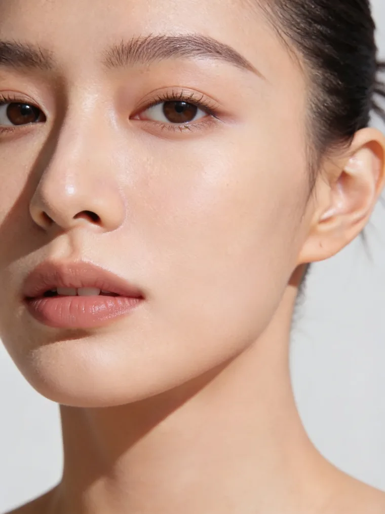

Recomandat
Sebum Off Protocol
420lei
de la · per ședință
Programează →

Față · Ten problematic & acnee
Acnee, exces de sebum, pori dilatați sau imperfecțiuni care revin? Reechilibrăm pielea în profunzime și o ajutăm să-și revină — cu protocoale faciale dedicate tenului problematic.
De ce apar imperfecțiunile

Imperfecțiunile apar când glandele produc prea mult sebum, porii se înfundă, iar inflamația și bacteriile fac restul. De aceea spălatul agresiv adesea înrăutățește lucrurile — pielea se apără producând și mai mult sebum.
Protocoalele noastre faciale lucrează pe cauză: curăță porii în profunzime, reglează sebumul și calmează inflamația, refăcând bariera pielii — fără să o usuce sau să o irite.
Tratamente recomandate
Planul exact îl stabilim la consultația gratuită, în funcție de tipul și severitatea tenului tău. Mai jos, opțiunile cel mai des recomandate (preț de pornire, per ședință).
Cum decurge
Tenul acneic are nevoie de consecvență — o cură de ședințe, plus o rutină simplă acasă.
Analiză de ten + plan
Identificăm tipul de ten și cauzele imperfecțiunilor și alegem protocolul potrivit. Gratuit.
Curățare profundă + reechilibrare
A doua ședință
A treia ședință
ten vizibil mai curat*A patra ședință — finalul curei
O ședință la 4–6 săptămâni
Menținem echilibrul pielii; ajustăm ritmul și abordăm cicatricile, dacă e cazul.
*În majoritatea cazurilor. Rezultatele variază în funcție de tipul de ten, factori hormonali și respectarea curei și a rutinei recomandate.
Întrebări frecvente
Ce spun clientele
4,9 / 5
★★★★★ · 300+ recenzii Google
Primul pas e gratuit